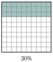
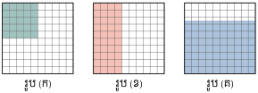
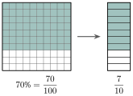

មេរៀនទី 6 ភាគរយ
- បកស្រាយចំណោទភាគរយ
- ប្តូរភាគរយជាប្រភាគនិងទសភាគហើយច្រាសមកវិញ
- ដោះស្រាយចំណោទដែលទាក់ទងនឹងភាគរយ ។
B. សញ្ញាណភាគរយ
គេមានក្រឡាអុក \(\displaystyle 100\) ។ ក្រឡាពណ៌មាន \(\displaystyle 30\) ។

គេថាចំនួនក្រឡាពណ៌មាន \(\displaystyle 30\) ភាគរយ នៃក្រឡាអុកទាំងអស់ ។
គេសរសេរ \(\displaystyle 30\%\) (អានថា ៣០ ភាគរយ) ។
បើគេសរសេរចំនួនក្រឡាពណ៌ជាប្រភាគដោយធៀបនឹងចំនួនក្រឡាអុកគឺ \(\displaystyle \frac{30}{100}\) ។
ដូចនេះ ភាគរយជាប្រភាគដែលមានភាគបែងស្មើនឹង \(\displaystyle 100\) ។ គេប្រើនិមិត្តសញ្ញា \(\displaystyle \%\) ដើម្បីតាងភាគរយ ។
ក្នុងសិស្សមួយក្រុមមានសិស្សស្រី \(\displaystyle 100\) នាក់ក្នុងនោះមានសិស្សស្រីចំនួន \(\displaystyle 40\) នាក់ ។ តើសិស្សស្រីមានប៉ុន្មានភាគរយ ? ហើយសិស្សប្រុសមានប៉ុន្មានភាគរយ ?
សិស្សស្រីមាន \(\displaystyle 40\%\) ឬ \(\displaystyle \frac{40}{100}\) នៃសិស្សទាំងអស់ ។
ចំនួនសិស្សប្រុស : \(\displaystyle 100 \text{ នាក់} - 40 \text{ នាក់} = 60 \text{ នាក់}\)
សិស្សប្រុសមាន \(\displaystyle 60\%\) ឬ \(\displaystyle \frac{60}{100}\) នៃសិស្សទាំងអស់ ។
សរសេរចំនួនក្រឡាពណ៌នៃរូបនីមួយៗជាភាគរយ ។

C. ការប្តូរភាគរយជាប្រភាគនិងទសភាគ
សរសេរ \(\displaystyle 70\%\) ជាប្រភាគ ។
ដូចនេះ \(\displaystyle 70\% = \frac{7}{10}\) ។

សរសេរភាគរយ \(\displaystyle 8\frac{1}{4}\%\) ជាចំនួនទសភាគ ។
គេអាចប្តូរភាគរយទៅជាប្រភាគមួយដោយសរសេរវាជាប្រភាគមួយដែលមានភាគបែងស្មើនឹង \(\displaystyle 100\) ។ បន្ទាប់មកសម្រួលប្រភាគនោះទៅជាទម្រង់ងាយបើអាច ។
ក. សរសេរ \(\displaystyle 4.8\%\) ទៅជាប្រភាគ ។ ខ. សរសេរ \(\displaystyle 75\%\) ទៅជាចំនួនទសភាគ ។
ក. \(\displaystyle 4.8\% = \frac{4.8}{100} = \frac{4.8 \times 10}{100 \times 10} = \frac{48}{1000} = \frac{6}{125}\) ។ ខ. \(\displaystyle 75\% = \frac{75}{100} = 0.75\) ។
ក. សរសេរ \(\displaystyle 15\%\), \(\displaystyle 32\%\), \(\displaystyle 595\%\) ជាប្រភាគ ។ ខ. សរសេរ \(\displaystyle 73\%\), \(\displaystyle 129\%\), \(\displaystyle 185\%\), \(\displaystyle 0.1\%\) ជាចំនួនទសភាគ ។
D. ការប្តូរប្រភាគ ឬចំនួនទសភាគជាភាគរយ
សរសេរប្រភាគ \(\displaystyle \frac{2}{25}\) ជាភាគរយ ។
ដូចនេះ \(\displaystyle \frac{2}{25} = 8\%\) ។

សរសេរចំនួនទសភាគ \(\displaystyle 0.03\) ជាភាគរយ ។
គេអាចប្តូរប្រភាគមួយ ឬចំនួនទសភាគមួយទៅជាភាគរយដោយគុណវានឹង \(\displaystyle 100\%\) ។
ក. សរសេរប្រភាគ \(\displaystyle 2\frac{1}{8}\) ជាភាគរយ ។ ខ. សរសេរចំនួនទសភាគ \(\displaystyle 7.8\) ជាភាគរយ ។
ក. \(\displaystyle 2\frac{1}{8} = \frac{17}{8} = \frac{17}{8} \times 100\% = 212.5\%\) ខ. \(\displaystyle 7.8 = 7.8 \times 100\% = 780\%\) ។
ក. សរសេរ \(\displaystyle \frac{2}{3}\), \(\displaystyle \frac{1}{5}\), \(\displaystyle \frac{7}{13}\) ជាភាគរយ ។ ខ. សរសេរ \(\displaystyle 1.5\), \(\displaystyle 0.80\), \(\displaystyle 0.007\), \(\displaystyle 0.983\) ជាភាគរយ ។
E. ចំណោទភាគរយ
ការរកភាគរយនៃបរិមាណមួយជាភាគរយនៃបរិមាណមួយទៀត
នៅក្នុងអនុវិទ្យាល័យមួយមានគ្រូបង្រៀន \(\displaystyle 70\) នាក់ ក្នុងនោះមាន \(\displaystyle 56\) នាក់ជាគ្រូកម្រិតមូលដ្ឋាន ។ រកភាគរយគ្រូកម្រិតមូលដ្ឋាន ។ រកភាគរយគ្រូមិនមែនជាគ្រូកម្រិតមូលដ្ឋាន ។
គេដឹងចំនួនគ្រូកម្រិតមូលដ្ឋានមាន \(\displaystyle 56\) នាក់ ក្នុងចំណោមគ្រូបង្រៀន \(\displaystyle 70\) នាក់ ។
ចំនួនគ្រូកម្រិតមូលដ្ឋានជាប្រភាគ \(\displaystyle \frac{56}{70}\)
ប្រភាគនេះទៅជាភាគរយ គេបាន : \(\displaystyle \frac{56}{70} \times 100\% = 80\%\) ។
ដូចនេះ \(\displaystyle 80\%\) នៃគ្រូបង្រៀននៅក្នុងសាលានេះជាគ្រូកម្រិតមូលដ្ឋាន ។
ភាគរយនៃលោកគ្រូមិនមែនជាគ្រូកម្រិតមូលដ្ឋាននៅក្នុងសាលានេះគឺ : \(\displaystyle 100\% - 80\% = 20\%\) ។
ដើម្បីសរសេរបរិមាណ \(\displaystyle a\) មួយជាភាគរយនៃបរិមាណ \(\displaystyle b\) មួយទៀត គេត្រូវ :
- សរសេរជាប្រភាគ \(\displaystyle \frac{a}{b}\)
- គុណប្រភាគ \(\displaystyle \frac{a}{b}\) នឹង \(\displaystyle 100\%\) ។
សិស្សម្នាក់អានអត្ថបទបាន \(\displaystyle 42\) ទំព័រ ក្នុងចំណោម \(\displaystyle 70\) ទំព័រនៃសៀវភៅប្រវត្តិវិទ្យា និង \(\displaystyle 36\) ទំព័រ ក្នុងចំណោម \(\displaystyle 50\) ទំព័រ នៃសៀវភៅភូមិវិទ្យា ។ រកភាគរយនៃទំព័រដែលសិស្សអានបានក្នុងសៀវភៅនីមួយៗ ។
ភាគរយនៃទំព័រដែលសិស្សអានបានក្នុងសៀវភៅប្រវត្តិវិទ្យា \(\displaystyle \frac{42}{70} \times 100\% = 60\%\)
ភាគរយនៃទំព័រដែលសិស្សអានបានក្នុងសៀវភៅភូមិវិទ្យា \(\displaystyle \frac{36}{50} \times 100\% = 72\%\) ។
ក្នុងចំណោមប្រជាពលរដ្ឋសរុប \(\displaystyle 96\) នាក់នៅសង្កាត់មួយមានទូរស័ព្ទប្រើប្រាស់ ។ ក្នុងចំណោមមនុស្សទាំងនោះមាន \(\displaystyle 18\) ជាមនុស្សចាស់ ។ រកភាគរយនៃមនុស្សចាស់ដែលបានប្រើទូរស័ព្ទ ។
ប្រាក់ចំណេញ និងប្រាក់ខាត
កង់មួយគ្រឿងទិញមកថ្លៃ \(\displaystyle 112~000\text{ ៛}\) ហើយបានលក់ទៅវិញថ្លៃ \(\displaystyle 140~000\text{ ៛}\) ។ តើកង់ចំណេញបានប្រាក់ប៉ុន្មាន ? ប្រាក់ចំណេញនោះជាភាគរយ ។
ប្រាក់ចំណេញ : \(\displaystyle 140~000\text{ ៛} - 112~000\text{ ៛} = 28~000\text{ ៛}\)
ប្រាក់ចំណេញជាភាគរយ : \(\displaystyle \frac{28~000}{112~000} \times 100\% = 25\%\) ។
ស្បែកជើងមួយគូទិញមកថ្លៃ \(\displaystyle 24~000\text{ ៛}\) ហើយលក់ទៅវិញបានប្រាក់ \(\displaystyle 20~000\text{ ៛}\) ។ តើស្បែកជើងខាតអស់ប្រាក់ប៉ុន្មាន ? ប្រាក់ខាតជាភាគរយ ។
ប្រាក់ខាត : \(\displaystyle 24~000\text{ ៛} - 20~000\text{ ៛} = 4~000\text{ ៛}\)
ប្រាក់ខាតជាភាគរយ : \(\displaystyle \frac{4~000}{24~000} \times 100\% = 16\frac{2}{3}\%\) ។
ដូចនេះ: គេទាញបានរូបមន្ត
ប្រាក់ចំណេញ = ប្រាក់លក់ \(\displaystyle -\) ប្រាក់ដើម ប្រាក់ខាត = ប្រាក់ដើម \(\displaystyle -\) ប្រាក់លក់
ដើម្បីធ្វើការប្រៀបធៀប គេតែងតែគណនាប្រាក់ចំណេញ ឬប្រាក់ខាតជាភាគរយនៃប្រាក់ដើម ។
ហាងលក់នាឡិកាមួយគ្រឿងថ្លៃ \(\displaystyle 260~000\text{ ៛}\) ចំណេញបាន \(\displaystyle 30\%\) ។ រកប្រាក់ដើមនៃនាឡិកា ។
ប្រាក់លក់ = ប្រាក់ដើម + ប្រាក់ចំណេញ
បើប្រាក់ដើម \(\displaystyle = 100\%\) នោះប្រាក់លក់ \(\displaystyle = (100\% + 30\%)\) នៃប្រាក់ដើម \(\displaystyle = 130\%\) នៃប្រាក់ដើម
គេបានប្រាក់លក់ \(\displaystyle = 130\% \times\) ប្រាក់ដើម
នាំឱ្យប្រាក់ដើម \(\displaystyle = \frac{\text{ប្រាក់លក់}\rule[-0.5em]{0pt}{1.55em}}{130\%} = \text{ប្រាក់លក់} \times \frac{100}{130} = \frac{100}{130} \times 260~000 = 200~000\text{ ៛}\) ។
ដូចនេះ ប្រាក់ដើមនៃនាឡិកាមួយគ្រឿងថ្លៃ \(\displaystyle 200~000\text{ ៛}\) ។
ម៉ាស៊ីនថតរូបមួយគ្រឿងខាតអស់ \(\displaystyle 6\%\) ។ តើម៉ាស៊ីនថតរូបនោះលក់ក្នុងតម្លៃប៉ុន្មាន បើម៉ាស៊ីនថតរូបនោះទិញមកថ្លៃ \(\displaystyle 3~600~000\text{ ៛}\) ?
ប្រាក់ខាត = ប្រាក់ដើម \(\displaystyle -\) ប្រាក់លក់
នាំឱ្យប្រាក់លក់ = ប្រាក់ដើម \(\displaystyle -\) ប្រាក់ខាត (បើប្រាក់ដើម \(\displaystyle = 100\%\))
នោះ ប្រាក់លក់ \(\displaystyle = (100\% - 6\%)\) នៃប្រាក់ដើម \(\displaystyle = 94\%\) នៃប្រាក់ដើម
ប្រាក់លក់ \(\displaystyle = \frac{94}{100} \times \text{ប្រាក់ដើម} = \frac{94}{100} \times 3~600~000 = 3~384~000\text{ ៛}\)
ដូចនេះ ម៉ាស៊ីនថតរូបលក់ក្នុងតម្លៃ \(\displaystyle 3~384~000\text{ ៛}\) ។
រកប្រាក់ចំណេញ ឬខាតគិតជា \(\displaystyle 100\text{ ៛}\) ចំពោះករណីនីមួយៗខាងក្រោម :
ក. បើប្រាក់ដើម \(\displaystyle = 160~000\text{ ៛}\) ហើយប្រាក់ចំណេញ \(\displaystyle = 20~000\text{ ៛}\)
ខ. បើប្រាក់លក់ \(\displaystyle = 240~000\text{ ៛}\) ហើយប្រាក់ខាត \(\displaystyle = 80~000\text{ ៛}\)
ការបញ្ចុះតម្លៃ
ទូរទស្សន៍មួយគ្រឿងមានតម្លៃលក់ធម្មតា \(\displaystyle 640~000\text{ ៛}\) ។ ឥឡូវហាងទូរទស្សន៍នេះបានលក់បញ្ចុះតម្លៃនៅត្រឹម \(\displaystyle 560~000\text{ ៛}\) រកការបញ្ចុះតម្លៃជាភាគរយ ។
ការបញ្ចុះតម្លៃ : \(\displaystyle 640~000 - 560~000 = 80~000\text{ ៛}\)
ការបញ្ចុះតម្លៃជាភាគរយគឺ : \(\displaystyle \frac{80~000}{640~000} \times 100\% = 12.5\%\) ។

- ការបញ្ចុះតម្លៃជាផលដករវាងតម្លៃលក់ខាងដើម និងតម្លៃដែលត្រូវលក់ ។
- ការបញ្ចុះតម្លៃជាភាគរយប្រាប់គេឱ្យដឹងជាភាគរយនៃតម្លៃលក់ខាងដើម ។
តុមួយលក់តម្លៃ \(\displaystyle 80~000\text{ ៛}\) ដោយបញ្ចុះតម្លៃ \(\displaystyle 15\%\) ។ តើតុនេះលក់បញ្ចុះតម្លៃប៉ុន្មានរៀល ?
ប្រាក់បញ្ចុះតម្លៃគឺ \(\displaystyle 15\%\) នៃ \(\displaystyle 80~000\text{ ៛} = \frac{15}{100} \times 80~000\text{ ៛} = 12~000\text{ ៛}\)
ដូចនេះ ប្រាក់បញ្ចុះតម្លៃគឺ \(\displaystyle 12~000\text{ ៛}\) ។

ហាងលក់នាឡិកាមួយបានលក់បញ្ចុះតម្លៃ \(\displaystyle 15\%\) ចំពោះគ្រប់នាឡិកាទាំងអស់ ។ នាឡិកាមួយមានដាក់តម្លៃលក់ខាងដើម \(\displaystyle 400~000\text{ ៛}\) ។ តើនាឡិកានោះត្រូវលក់តម្លៃប៉ុន្មាន ?
កម្រៃជើងសារ
ភ្នាក់ងារបានជួយលក់ដីស្រែរបស់មីងសំមួយកន្លែងក្នុងតម្លៃ \(\displaystyle 8~800~000\text{ ៛}\) ដោយទទួលប្រាក់កម្រៃជើងសារ \(\displaystyle 3\%\) ។ តើភ្នាក់ងារទទួលបានប្រាក់កម្រៃជើងសារប៉ុន្មានរៀល ?
\(\displaystyle 3\%\) នៃ \(\displaystyle 8~800~000\text{ ៛} = \frac{3}{100} \times 8~800~000\text{ ៛} = 264~000\text{ ៛}\)
ដូចនេះ ភ្នាក់ងារទទួលបានប្រាក់កម្រៃជើងសារ \(\displaystyle 264~000\text{ ៛}\) ។
ម៉ីងសានបានទទួលប្រាក់ខែ \(\displaystyle 400~000\text{ ៛}\) ក្នុងមួយខែ ហើយគាត់កាត់រកបានប្រាក់កម្រៃជើងសារ \(\displaystyle 1\%\) លើតម្លៃទំនិញដែលបានលក់ ។ បើគាត់លក់ទំនិញក្នុងខែនេះបានប្រាក់ \(\displaystyle 10~000~000\text{ ៛}\) ។ តើក្នុងខែនេះគាត់ទទួលបានប្រាក់ទាំងអស់ប៉ុន្មានរៀល ?
ប្រាក់កម្រៃជើងសារ \(\displaystyle = 1\%\) នៃ \(\displaystyle 10~000~000\text{ ៛} = \frac{1}{100} \times 10~000~000\text{ ៛} = 100~000\text{ ៛}\)
ប្រាក់ដែលគាត់ទទួលបាន \(\displaystyle = 400~000\text{ ៛} + 100~000\text{ ៛} = 500~000\text{ ៛}\)
ដូចនេះ ប្រាក់ដែលគាត់ទទួលបានទាំងអស់សម្រាប់ខែនេះគឺ \(\displaystyle 500~000\text{ ៛}\) ។
បុគ្គលិកម្នាក់ទទួលបានប្រាក់កម្រៃជើងសារ \(\displaystyle 2\%\) ពីការលក់ខោអាវយោធាមួយគ្រឿង ។ បើគេទទួលបានប្រាក់កម្រៃជើងសារចំនួន \(\displaystyle 80~000\text{ ៛}\) ពីការលក់ ។ តើខោអាវយោធាមួយគ្រឿងនោះលក់តម្លៃប៉ុន្មាន ?
ការប្រាក់
នៅពេលគេយកប្រាក់ទៅដាក់ក្នុងធនាគារមួយ គេទទួលបានការប្រាក់ពីធនាគារនោះប្រើប្រាស់ ។ ដូចនេះ ពេលគេខ្ចីប្រាក់ពីធនាគារមកប្រើប្រាស់ គេត្រូវបង់ការប្រាក់ឱ្យធនាគារ ។
ការប្រាក់ទាក់ទងនឹងចំណុចទាំងនេះ ត្រូវបានគណនាជាភាគរយនៃប្រាក់ដើមហៅថាអត្រា ។
- ការប្រាក់ : ជាប្រាក់ចំណេញ ឬប្រាក់ខាតបន្ថែមពីលើប្រាក់ដែលឱ្យខ្ចី ឬខ្ចីក្នុងរយៈពេលកំណត់មួយ ។
- ប្រាក់ដើម : ជាទំហំប្រាក់ខ្ចី ឬឱ្យខ្ចី ។
- អត្រា : ជាការប្រាក់គិតជាភាគរយក្នុងពេលវេលាមួយខែ ឬមួយឆ្នាំ ។ ជាទូទៅគេគិតអត្រាការប្រាក់ ១ ឆ្នាំ ។
ពូសិរីខ្ចីប្រាក់ \(\displaystyle 400~000\text{ ៛}\) ពីធនាគារមួយក្នុងអត្រា \(\displaystyle 6\%\) ។ បើគាត់ខ្ចីរយៈពេល \(\displaystyle 3\) ឆ្នាំ តើគាត់ត្រូវបង់ការប្រាក់អស់ប៉ុន្មានរៀលទៅឱ្យធនាគារ ?
ប្រាក់ដើមគឺ \(\displaystyle 400~000\text{ ៛}\)
ការប្រាក់លើប្រាក់ \(\displaystyle 400~000\text{ ៛}\) ក្នុងរយៈពេល \(\displaystyle 1\) ឆ្នាំគឺ : \(\displaystyle \frac{6}{100} \times 400~000\text{ ៛} = 24~000\text{ ៛}\)
ការប្រាក់លើប្រាក់ \(\displaystyle 400~000\text{ ៛}\) ក្នុងរយៈពេល \(\displaystyle 3\) ឆ្នាំគឺ : \(\displaystyle 3 \times 24~000\text{ ៛} = 72~000\text{ ៛}\)
ដូចនេះ គាត់ត្រូវបង់ការប្រាក់ \(\displaystyle 72~000\text{ ៛}\)
ម៉ីងសានបានបញ្ញើប្រាក់សន្សំចំនួន \(\displaystyle 1~450~000\text{ ៛}\) ក្នុងអត្រា \(\displaystyle 10\%\) ។ តើគាត់ទទួលបានការប្រាក់ប៉ុន្មានរៀលពីធនាគារ ? បើរយៈពេលបាន ១ ឆ្នាំ ៣ ខែ ។
ប្រាក់ដើមគឺ \(\displaystyle 1~450~000\text{ ៛}\)
\(\displaystyle 1 \text{ ឆ្នាំ } 3 \text{ ខែ } = (1 + \frac{3}{12}) \text{ ឆ្នាំ } = \frac{5}{4} \text{ ឆ្នាំ}\)
ការប្រាក់លើប្រាក់ \(\displaystyle 1~450~000\text{ ៛}\) ក្នុងរយៈពេល \(\displaystyle 1\) ឆ្នាំគឺ : \(\displaystyle 1~450~000\text{ ៛} \times \frac{10}{100} = 145~000\text{ ៛}\)
ដូចនេះការប្រាក់លើប្រាក់ \(\displaystyle 1~450~000\text{ ៛}\) ក្នុងរយៈពេល \(\displaystyle \frac{5}{4}\) ឆ្នាំគឺ \(\displaystyle 145~000\text{ ៛} \times \frac{5}{4} = 181~250\text{ ៛}\)
តាមឧទាហរណ៍ខាងលើ យើងសង្កេតឃើញការប្រាក់ដែលត្រូវបង់ឱ្យគេ ឬទទួលពីគេផ្អែកទៅលើ :
- ចំនួនប្រាក់ដែលបានខ្ចី ឬឱ្យខ្ចី ហៅថាប្រាក់ដើម ។
- អត្រាការប្រាក់ដែលត្រូវបង់ហៅថាអត្រា \(\displaystyle \%\) ។
- ពេលវេលាដែលគេខ្ចី ឬឱ្យគេខ្ចី ហៅថារយៈពេល ។
គេទាញបានរូបមន្ត
ការប្រាក់ = ប្រាក់ដើម \(\displaystyle \times\) អត្រា \(\displaystyle \times\) រយៈពេល ឬ \(\displaystyle I = \frac{PRT}{100}\)
ដែល \(\displaystyle I\) ជាការប្រាក់ \(\displaystyle T\) ជារយៈពេលគិតជាឆ្នាំ \(\displaystyle P\) ជាប្រាក់ដើម និង \(\displaystyle R\%\) ជាអត្រាការប្រាក់ក្នុងមួយឆ្នាំ ។
ពូសុខបានខ្ចីប្រាក់អ៊ុំសឿនចំនួន \(\displaystyle 2~400~000\text{ ៛}\) គិតអត្រា \(\displaystyle 8\%\) ក្នុងមួយឆ្នាំ ។ រកការប្រាក់ដែលគាត់ត្រូវបង់ឱ្យអ៊ុំសឿនសម្រាប់រយៈពេល \(\displaystyle 4\) ឆ្នាំ ។
\(\displaystyle P = 2~400~000\text{ ៛}\), \(\displaystyle R = 8\) និង \(\displaystyle T = 4\)
ការប្រាក់គឺ \(\displaystyle I = \frac{PRT}{100} = \frac{2~400~000 \times 8 \times 4}{100} = 768~000\text{ ៛}\)
ដូចនេះ ការប្រាក់ដែលគាត់ត្រូវបង់គឺ \(\displaystyle 768~000\text{ ៛}\) ។
អ៊ុំស្រីម្នាក់បានចងការប្រាក់ឱ្យគេចំនួន \(\displaystyle 1~000~000\text{ ៛}\) ក្នុងអត្រា \(\displaystyle 6\%\) ។ តើរយៈពេលប៉ុន្មានទើបគាត់នឹងទទួលបានប្រាក់សរុបចំនួន \(\displaystyle 1~360~000\text{ ៛}\) ។
ការប្រាក់គឺ : \(\displaystyle 1~360~000\text{ ៛} - 1~000~000\text{ ៛} = 360~000\text{ ៛}\)
\(\displaystyle I = 360~000\text{ ៛}\), \(\displaystyle R = 6\) និង \(\displaystyle P = 1~000~000\text{ ៛}\)
\(\displaystyle I = \frac{PRT}{100}\) នាំឱ្យ \(\displaystyle T = \frac{I \times 100}{P \times R}\)
នាំឱ្យ \(\displaystyle T = \frac{360~000 \times 100}{1~000~000 \times 6} = 6\) ។
ដូចនេះ រយៈពេល \(\displaystyle 6\) ឆ្នាំទើបគាត់ទទួលប្រាក់សរុប \(\displaystyle 1~360~000\text{ ៛}\) ។
ចូរបំពេញតារាងខាងក្រោម :
| ប្រាក់ដើម | អត្រាការប្រាក់ | រយៈពេល | ការប្រាក់ | ចំនួនប្រាក់សរុប \(\displaystyle 480~000\text{ ៛}\) | \(\displaystyle 8\%\) | \(\displaystyle 7 \text{ ឆ្នាំ}\) | \(\displaystyle 9\%\) | \(\displaystyle 4 \text{ ឆ្នាំ}\) | \(\displaystyle 43~300\text{ ៛}\) | \(\displaystyle 2~000~000\text{ ៛}\) | \(\displaystyle 11\%\) | \(\displaystyle 88~000\text{ ៛}\) | \(\displaystyle 720~000\text{ ៛}\) | \(\displaystyle 18 \text{ ខែ}\) | \(\displaystyle 75~600\text{ ៛}\) |
លំហាត់
- សរសេរភាគរយនីមួយៗជាប្រភាគនិងជាចំនួនទសភាគ : ក. \(\displaystyle 48\%\) ខ. \(\displaystyle 28\%\) គ. \(\displaystyle 37.5\%\) ឃ. \(\displaystyle 66\%\) ង. \(\displaystyle 99\%\) ច. \(\displaystyle 110\%\) ។
- ប្តូរប្រភាគនិងចំនួនទសភាគនីមួយៗជាភាគរយ :
ក. \(\displaystyle \frac{6}{7}\) ខ. \(\displaystyle \frac{17}{20}\) គ. \(\displaystyle 0.78\) ឃ. \(\displaystyle 0.095\) ង. \(\displaystyle 1.35\) ច. \(\displaystyle 1\frac{6}{25}\) ។ - ក. សរសេរ \(\displaystyle 45m\) ជាភាគរយនៃ \(\displaystyle 1km\) ខ. សរសេរ \(\displaystyle 1kg\) ជាភាគរយនៃ \(\displaystyle 800g\) ។
- រៀបចំចំនួនខាងក្រោមតាមលំដាប់ចុះ :
ក. \(\displaystyle 0.39\), \(\displaystyle \frac{12}{32}\), \(\displaystyle 4\frac{1}{2}\%\) ខ. \(\displaystyle 64\%\), \(\displaystyle 0.6\), \(\displaystyle \frac{2}{3}\) ។ - គណនាចំនួនខាងក្រោម :
ក. \(\displaystyle 15\frac{1}{2}\%\) នៃ \(\displaystyle 2~560~000\text{ ៛}\) ខ. \(\displaystyle 25\%\) នៃ \(\displaystyle 72m\)
គ. \(\displaystyle 6.5\%\) នៃមនុស្ស \(\displaystyle 5~000\) នាក់ ឃ. \(\displaystyle 30.6\%\) នៃ \(\displaystyle 300\) លីត្រ ។ - ក្រុមហ៊ុនមួយបានកាត់បន្ថយបុគ្គលិកចំនួន \(\displaystyle 24\) នាក់ចេញពីបុគ្គលិក \(\displaystyle 400\) នាក់ ។ តើបុគ្គលិកដែលបានកាត់បន្ថយមានប៉ុន្មានភាគរយ ?
- នៅក្នុងមណ្ឌលបោះឆ្នោតមួយកន្លែងមានអ្នកចុះឈ្មោះបោះឆ្នោតចំនួន \(\displaystyle 8~500\) នាក់ ហើយនៅថ្ងៃបោះឆ្នោតមាន \(\displaystyle 5\%\) នៃអ្នកដែលបានចុះឈ្មោះមិនបានមកបោះឆ្នោត ។ គណនាចំនួនមនុស្សដែលបានបោះឆ្នោត ។
- កម្មកររោងចក្រកាត់ដេរត្រូវបានគេតម្លើងប្រាក់ខែឱ្យ \(\displaystyle 8\%\) នៃប្រាក់ខែរបស់ពួកគេ ។
ក. បើកញ្ញាស្រីមុំបានទទួលប្រាក់ខែ \(\displaystyle 240~000\text{ ៛}\) ក្នុងមួយខែ ។ រកប្រាក់ខែថ្មីរបស់នាងក្រោយពេលបានតម្លើង ។
ខ. បើប្រាក់ខែរបស់លោកសុខ ក្រោយពីតម្លើងរួចទទួលបាន \(\displaystyle 320~000\text{ ៛}\) ។ រកប្រាក់ខែរបស់គាត់មុនត្រូវបានតម្លើង ។ - រកប្រាក់ចំណេញ ឬប្រាក់ខាតដោយគិតជាភាគរយចំពោះករណីនីមួយៗដូចខាងក្រោម :
ក. មោចក្រយានមួយគ្រឿងមានតម្លៃ \(\displaystyle 600~000\text{ ៛}\) ហើយត្រូវបានលក់វិញថ្លៃ \(\displaystyle 480~000\text{ ៛}\) ។
ខ. តុមួយមានតម្លៃ \(\displaystyle 272~000\text{ ៛}\) ហើយត្រូវបានលក់វិញថ្លៃ \(\displaystyle 352~000\text{ ៛}\) ។ - បុរសម្នាក់បានទិញម៉ាស៊ីនថតរូប \(\displaystyle 12\) គ្រឿងអស់ប្រាក់ \(\displaystyle 7~200~000\text{ ៛}\) ។ បើគាត់លក់ម៉ាស៊ីនថតរូបទាំងនោះវិញបានប្រាក់ចំណេញក្នុងមួយគ្រឿងៗ \(\displaystyle 80~000\text{ ៛}\) ។ រកប្រាក់ចំណេញគិតជាភាគរយ ។
- ពូសំបានទិញគោបាមួយក្បាល ហើយលក់ទៅឱ្យប្អូនវិញបានប្រាក់ចំណេញ \(\displaystyle 25\%\) ។ ប្អូនបានលក់គោនោះបន្តទៅឱ្យពូចូចបានប្រាក់ចំណេញ \(\displaystyle 20\%\) ។ តើពូសំទិញគោនោះថ្លៃប៉ុន្មាន បើពូចូចទិញថ្លៃ \(\displaystyle 2~880~000\text{ ៛}\) ?
- ចូររកតម្លៃដើមគ្រា :
ក. អង្ករមួយថ្លៃ \(\displaystyle 80~000\text{ ៛}\) បន្ទាប់ពីបានបញ្ចុះថ្លៃ \(\displaystyle 12\%\)
ខ. វិទ្យុមួយគ្រឿងថ្លៃ \(\displaystyle 100~000\text{ ៛}\) បន្ទាប់ពីបានបញ្ចុះថ្លៃ \(\displaystyle 6\%\) ។ - ម៉ីងសាយបានទិញទូរទស្សន៍ថ្លៃ \(\displaystyle 1~200~000\text{ ៛}\) ដែលថ្លៃលក់ដើមត្រឹម \(\displaystyle 1~600~000\text{ ៛}\) ។
ក. រកប្រាក់ដែលបានបញ្ចុះថ្លៃ ខ. រកប្រាក់បញ្ចុះថ្លៃជាភាគរយ ។ - ស្រ្តីម្នាក់ធ្វើការជាអ្នកលក់ផលិតផលឱ្យក្រុមហ៊ុនមួយបានប្រាក់ខែ \(\displaystyle 320~000\text{ ៛}\) ក្នុងមួយខែ ។ គាត់ទទួលបានប្រាក់កម្រៃជើងសារ \(\displaystyle 10\%\) បន្ថែមទៀតពីការលក់ផលិតផល ។ បើនៅក្នុងខែនេះស្រ្តីនោះទទួលបានប្រាក់សរុបចំនួន \(\displaystyle 528~000\text{ ៛}\) ។ រកប្រាក់ដែលលក់ផលិតផលបានទាំងអស់ ។
- បុរសម្នាក់ខ្ចីប្រាក់គេចំនួន \(\displaystyle 16~800~000\text{ ៛}\) ក្នុងអត្រា \(\displaystyle 5\frac{1}{2}\%\) ដើម្បីទិញរថយន្តមួយគ្រឿង ។ គាត់ខ្ចីរយៈពេល \(\displaystyle 4\) ឆ្នាំ ។
ក. រកការប្រាក់ដែលត្រូវបង់ឱ្យគេ ខ. រកប្រាក់សរុបដែលត្រូវសងគេវិញ ។ - ស្រ្តីម្នាក់បានចងការប្រាក់ឱ្យគេចំនួន \(\displaystyle 3~200~000\text{ ៛}\) ក្នុងអត្រា \(\displaystyle 6\%\) និង \(\displaystyle 4~800~000\text{ ៛}\) ដោយអត្រា \(\displaystyle 7\%\) ។ រកការប្រាក់សរុបដែលគាត់ទទួលបានក្នុងមួយឆ្នាំពីប្រាក់ចងការទាំងពីរនេះ ។
- ពូសំបានផ្ញើប្រាក់ \(\displaystyle 20~000~000\text{ ៛}\) នៅក្នុងធនាគារមួយដោយទទួលបានអត្រាការប្រាក់ \(\displaystyle 7\%\) ។ តើក្នុងរយៈពេលប៉ុន្មានឆ្នាំទើបគាត់ទទួលប្រាក់សរុបទាំងប្រាក់ដើមនិងការប្រាក់ \(\displaystyle 21~925~000\text{ ៛}\) ?
ខ្លឹមសារ៖ សៀវភៅពុម្ពគណិតវិទ្យាថ្នាក់ទី៧ របស់ក្រសួងអប់រំ យុវជន និងកីឡា · វាយអត្ថបទ គូររូបភាពឡើងវិញ និងរៀបចំលើអនឡាញដោយលោកគ្រូ សាន សុខលី សម្រាប់ការសិក្សាដោយឥតគិតថ្លៃ និងមិនរកប្រាក់ចំណេញ។ មិនមែនជាការបោះពុម្ពផ្លូវការរបស់ក្រសួងទេ។